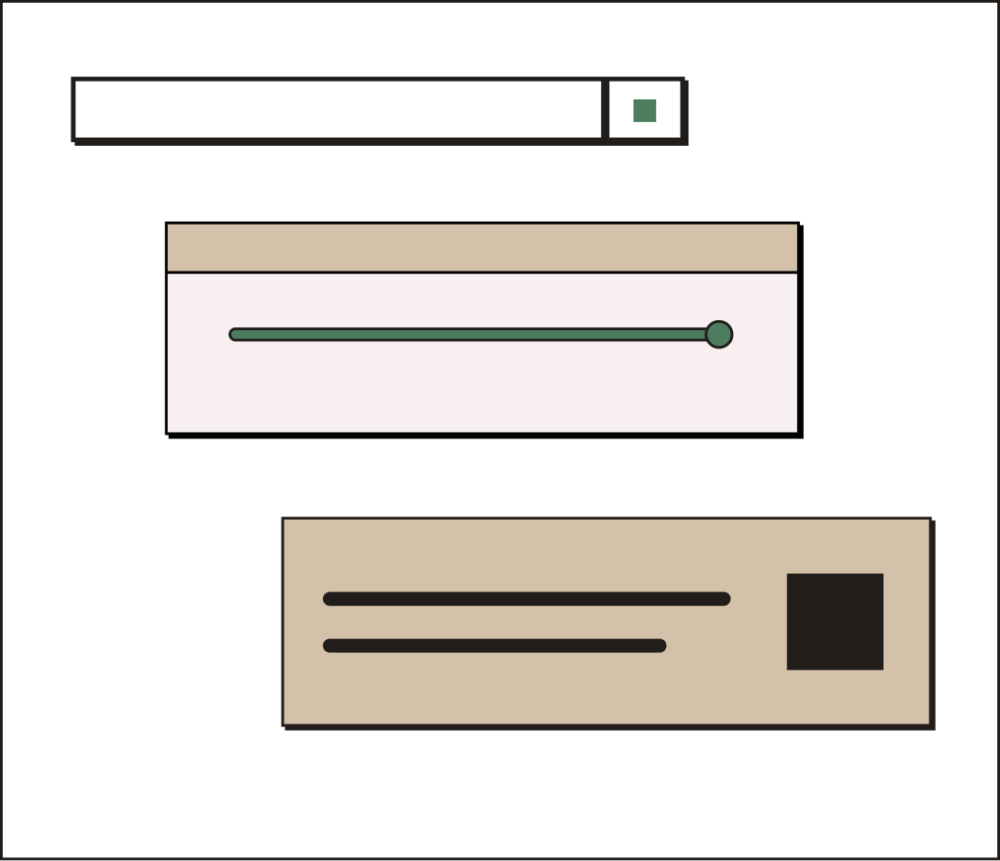

Galau milih startup atau S2, Karsa bikin gambarannya jelas. Sekarang aku tau harus negosiasi apa.Wong Ashley
Website yang Nunjukin
Keputusan Karirmu
Alat bantu kamu mikirin, bukan alat yang mutusin!
Website yang Nunjukin
Keputusan Karirmu
Alat bantu kamu mikirin, bukan alat yang mutusin!
Sumber: BPS, Nov 2025.
Makanya, sebelum ambil keputusan karier, ada bagusnya kamu tau dulu kondisinya.
Simulator yang ngubah data gaji, pengeluaran, sama target tabunganmu jadi gambaran kelayakan sebuah karier. Bukan penentu keputusan, tapi alat bantu kamu mikirin.

Alasan Kami
Keputusan karier itu berat, jangan cuma modal insting. Karsa hitungin semuanya dari data yang kamu isi sendiri.
Nggak perlu bikin akun atau isi form panjang. Tinggal ketik angka, hasilnya keluar dalam hitungan menit.
Gaji segitu, cukup nggak buat nabung 5 tahun lagi? Karsa kasih gambaran sebelum kamu beneran ambil keputusan.
Hitungannya dari teori ekonomi dan data BPS. Lihat rumusnya di Metodologi.
Cocok Buat Kamu yang...
Contoh Hasil
Contoh dari Dinda, fresh graduate di Jakarta dengan tawaran gaji Rp5.000.000.
Ini contoh ilustrasi, bukan prediksi pasti.
Coba Sebentar
Biaya hidup Rp3.000.000 · Target tabungan Rp1.000.000
Cerita Pengguna
Masih Bingung?
Angka-angkamu, dihitung dengan metode yang transparan, gratis dan tanpa perlu akun.
Mulai Simulasi